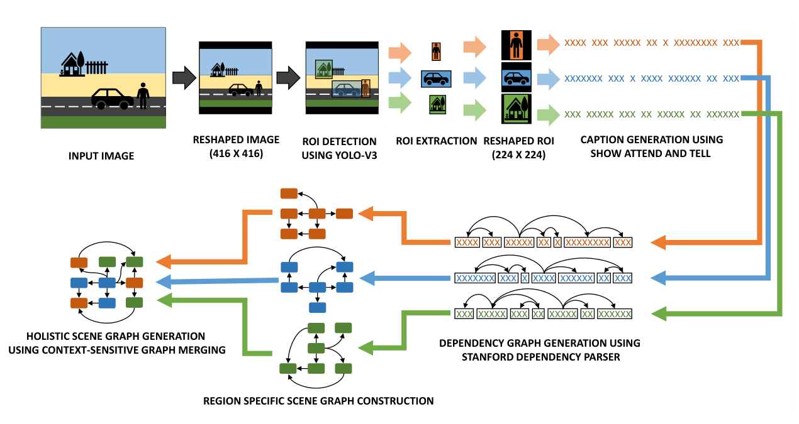
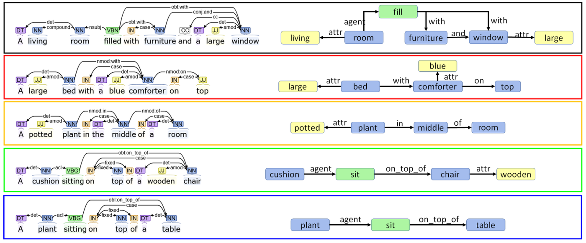

Turning a photo into a graph of what is in it, without training on graphs
A photo of a bedroom is more than a list of objects. The plant is on the table, the cushion sits on a wooden chair, the comforter is blue. A scene graph writes this down as nodes (things) joined by labelled edges (how they relate). Training a model to produce such graphs normally needs huge collections of images that people have annotated with graphs. We tried a different route: let existing models describe small parts of the image in words, then turn those sentences into graphs by fixed rules and merge them.
The problem
A scene graph is built from triplets of the form subject, predicate, object, such as plant, on top of, table. Learning these relations is hard. The number of possible combinations is huge, and a few combinations are very common while most are rare. Supervised models also need images with graph annotations, and the paper notes that these datasets have to be very large. Many existing methods also lean on tricks such as message passing, probabilistic models or statistics of the dataset, which are not easy to explain.
The idea
Our starting point was a hypothesis. A network that can write a caption for a picture must already encode some relational information about it, even if it never outputs a graph. A caption such as "a plant sitting on top of a table" contains a relation in plain language. So instead of building a dedicated graph model, we read the relations out of captions.
One caption for a whole image misses detail, so we caption regions. A pre-trained object detector called YOLO-V3 finds regions of interest. Each region is cropped, padded with zeros so that its shape is not distorted, resized to 224 × 224 pixels and passed to a pre-trained captioning model, Show, Attend and Tell. We kept a single caption per region to avoid redundancy. We trained none of these parts ourselves.

How it works
To turn a caption into a graph, we first run the Stanford dependency parser. It labels how the words of a sentence depend on each other, for example which noun is the subject of which verb. From those labels, simple rules create the graph. Nouns become entity nodes, verbs become action nodes, and adjectives and adverbs become attribute nodes. Pronouns are handled too: "he" gives a masculine person with a "masculine" attribute, and "they" gives people. Auxiliary verbs such as "is" do not become actions.
Edges come from the dependency labels in the same way. A subject of a verb gives an agent edge, a direct object gives a patient edge, and a modifier gives an attr edge. Prepositions produce spatial edges such as on_top_of. Because every step is a written rule, you can trace why any node or edge exists. This is the sense in which the graph generation is explainable.

The region graphs overlap, so the last step merges them, using an approximate version of the maximum common subgraph idea (the largest piece two graphs share). Two entities are merged if they have the same lemma (the dictionary form of the word) and their bounding boxes overlap enough: the intersection divided by the area of the smaller box must be above 0.5. Entities with different words can also be merged if WordNet, a database of word meanings, puts them in the same synset, for example dog and hound. After two entities merge, their matching actions and attributes merge as well. Finally, if two overlapping regions name an entity at different levels of detail, such as "furniture" and "table", an is edge is added between them.

What we found
Most related work relies on graph annotations as ground truth, so there is no fair way to compare our output with theirs. We therefore report statistics and examples. Across the graphs of all the regions in one image, we count around 18.48 ± 12.47 entities and 20.97 ± 15.86 relations. After merging, we get around 10.96 ± 6.06 entities and 16.23 ± 10.57 relations. On the validation captions of the MSCOCO captioning dataset, our rules give on average 5.16 ± 1.00 entities, 2.06 ± 0.24 actions, 2.49 ± 0.87 attributes and 5.73 ± 1.55 relations per caption, where the average caption is 11.85 words long.
The merging rules can also keep things apart. In one example, two captions both mention a plant, but their boxes do not overlap, so the graph keeps two plants. Since several regions contribute, a completely wrong graph is unlikely, but partial mistakes happen.
What it does not do
The graph is only as good as the detector and the captioner. In one example a caption invents a tree, in another a wooden carriage is called a bench or a fence. A person is made the agent of both drawing the carriage and riding the horses, possibly because of statistical bias in the captioner. A partly visible armchair is called a bed, and an "each other" is turned into a node called "other". We could not measure correctness with a number, because the method uses no graph ground truth and no graph benchmark fits it. The caption generation itself is not fully explainable either, even though the graph rules are.
Because the parts are modular, a better detector or captioner can be swapped in. We also suggest that the graphs could serve content-based image retrieval or visual question answering, and that a later version could link nodes and edges back to visual features learned from the image.
Sources
The figures and tables listed here are taken from the paper cited at the top of this page; the numbers quoted in the text come from the paper too.
- Figures: Fig. 2, Fig. 4, Fig. 1
Acknowledgements
This work was funded by the Science and Engineering Research Board (DST), Govt. of India (Ref. EEQ/2018/000963). The authors are thankful to CMATER Laboratory, Dept. of CSE, Jadavpur University, for providing infrastructural support for this work.
How to cite the paper
Swarnendu Ghosh, T Gonçalves, N Das (2023). Im2graph: A weakly supervised approach for generating holistic scene graphs from regional dependencies. Future Internet, 15(2):70 · MDPI.